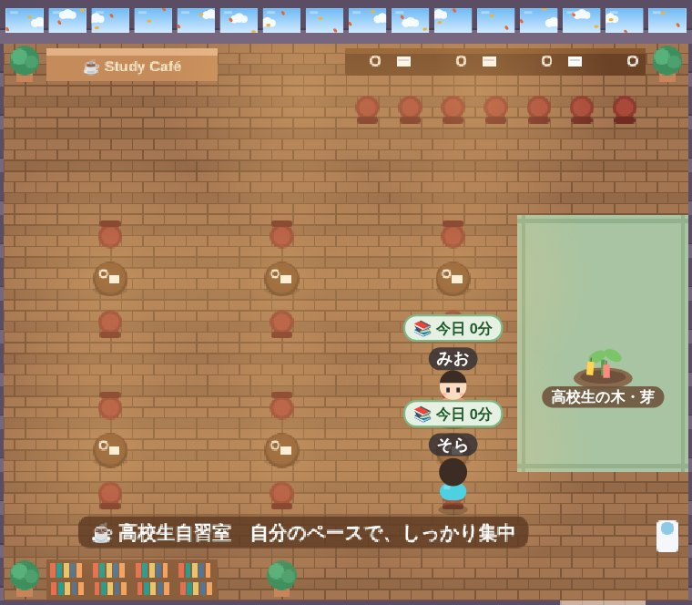
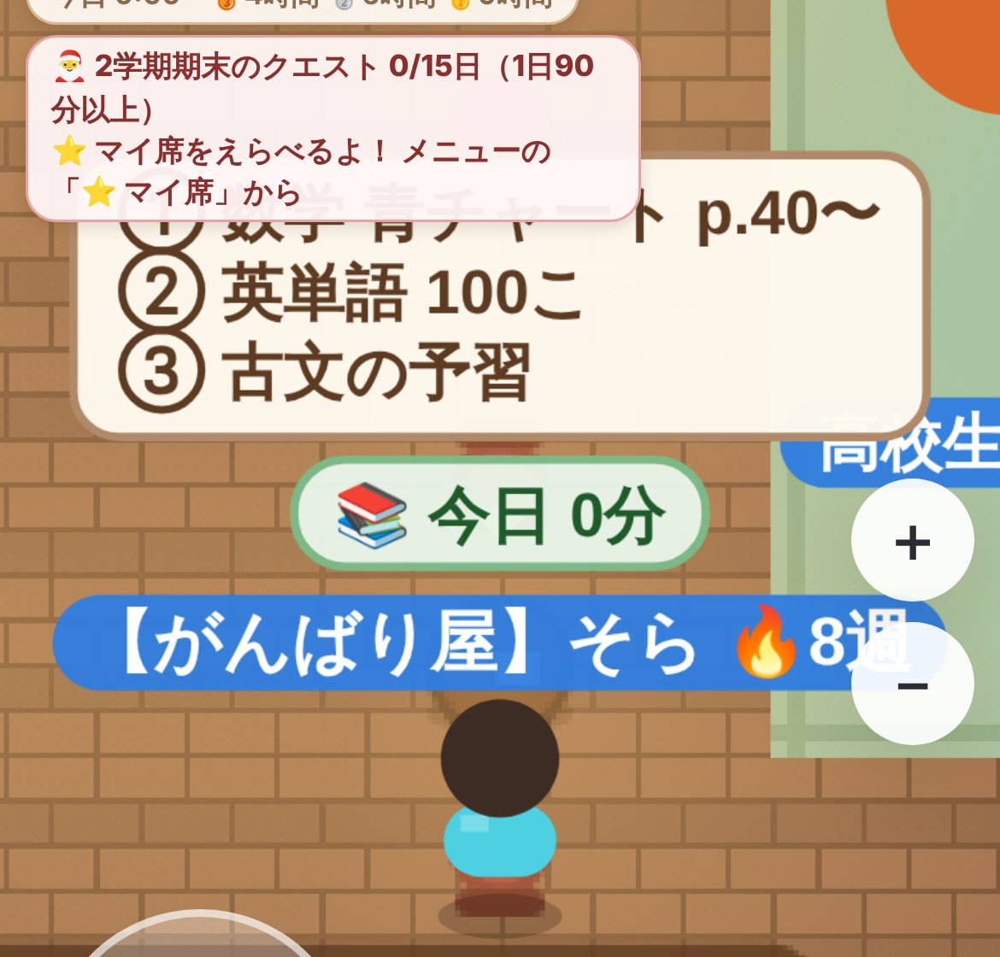

自分のペースで、しっかり積み上げる。
高校生専用のカフェ風自習室で、受験までの毎日をデザインしよう。

月〜日の合計で決まる。何日に分けてもOK。
| 🥉 4時間 | 🥈 6時間 | 🥇 9時間 |
|---|---|---|
| ＋10pt | ＋20pt | ＋30pt |
🔥は🥉以上の週が続いた数（例：🔥8週）。部活で忙しい週も4時間で守れる。
入ったら3つ書いてスタート。頭の上に表示されるから、何をやるかがはっきりする。

勉強時間の合計で、名前の前に称号がつく。
| 20時間 | 【がんばり屋】 |
| 50時間 | 【努力家】 |
| 100時間 | 【鉄人】 |
| 200・300・500時間 | 【勉強の達人】【受験の覇者】【伝説の受験生】 |
16:00〜23:00は10分で1ポイント（1日6時間まで）。時間帯の外も「今日○分」には入る。週のメダルのボーナスもポイントに。全アイテム交換OK。
高校生自習室に入ってきた子に👋😊💪✨を送れる（すわっていなくてOK）。同じ相手に1日1回、もらったら1回返せる。中学生・高校生に見える。
高校生の勉強時間で高校生の木が育ち、目標は短冊に。🔥が4週続くと、窓ぎわのカウンターなど好きな席をマイ席にできる。
| クエスト | 期間 | クリア（15日）すると |
|---|---|---|
| 🎋 1学期中間 | 5/1〜5/31 | 織姫と彦星から手紙＋🎋笹かざり（その場で「今すぐつける」） |
| 🎋 1学期期末 | 6/1〜6/30 | 7/1〜7/20 彦星がついて歩く。両方クリアで織姫も。7/7は天の川 |
| 🎅 2学期中間 | 10/1〜10/31 | サンタから手紙＋🎅サンタ帽 |
| 🎅 2学期期末 | 11/1〜11/30 | 12/1〜12/25 サンタがついて歩く。両方クリアでトナカイも。12/25は雪とプレゼント |
| 🎎 3学期学年末 | 1/20〜2/28 | 3/1〜3/20 ひな人形の行列（15日／20日で三人官女／25日で五人囃子）。3/3はひなあられ |
💡 画面の左上に「今週 4:50 🥉・🥈まであと1:10」と、クエストの「○/15日」が出るよ。